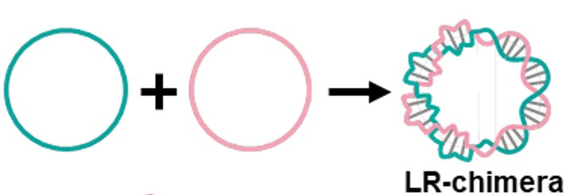
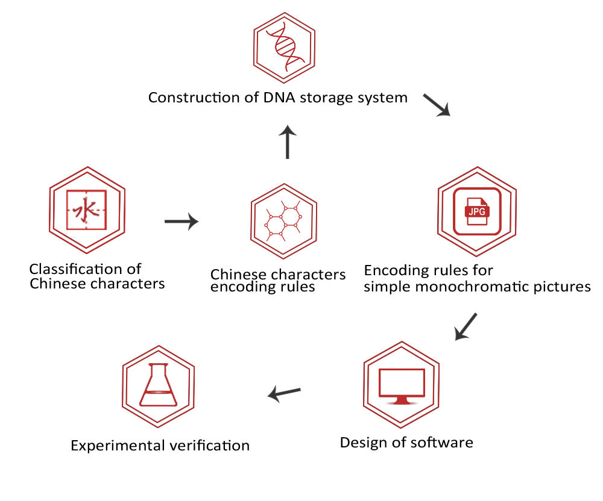

Z-type nucleic acid is a left-handed nucleic acid structure, divided into Z-DNA and Z-RNA. It is widely found in organisms and plays significant biological functions, such as participating in microbial protection mechanisms, gene regulation, genetic instability, antiviral and inducing autoimmune diseases and cancer. Z-DNA could maintain health through genetic regulation (for example, by inhibiting cancer cell metastasis and oxidative tissue damage). [1-8] An in-depth study of the properties of Z-type nucleic acid has far-reaching implications for disease treatment, drug development, antibacterial and even food quality control. [9-10]
Fig 1. Structural of nuclear acid secondary structure
Note: The top view is a double helix top view, and the bottom view is a double helix mixed sphere model. The base pairing in all five structures is Watson Crick pairing. A-DNA (A) and B-DNA (B) are both right helix structures, with a black sphere containing phosphorus atoms. Z-DNA (C) is a left helix structure, with black representing carbon atoms, white representing hydrogen atoms, blue representing nitrogen atoms, yellow representing phosphorus atoms, red representing oxygen atoms, and green representing 2 'oxygen atoms of cytidine.
Under physiological ion conditions, the hybridization of two complementary short cyclic SSDNA forms stable LR chimeras through topological constraints. Using this method can generate stable z-dna .[11]
B-Z junction

Fig 2. Using complementary DNA strand hybridization to form DNA loops
Double stranded RNA editing enzyme ADAR1 (adenosine deaminase acting on RNA 1) is a Z-DNA specific binding protein that binds through Z α Domain recognition Z-DNA. This interaction has structural specificity, but no base specificity.[12]
DNA ring hybridization will produce z-dna, and if z-dna can be detected through ADAR1, it indicates successful hybridization.
这里缺个【13】
APP means Alternating Pyrimidine and Purine. The App sequence adopts left rotation under negative superhelical pressure, which is more prone to z-dna generation.[14]
The circular structure formed by hybridization of SSDNA rings is stable, but cannot form a large structure. Based on this, the team designed a dumbbell shaped DNA ring to allow multiple DNA rings to hybridize to form a large structure.

Figure 3. 这里是有图的还在让房画
Introduce stems between DNA rings to achieve hybridization between multiple rings. By modifying the position of complementary sequences and changing the angle of ring hybridization, the desired structure can be spliced.

图片不作数 图片介绍
[1] 参考文献
[2] 参考文献
[3] 参考文献
[4] 参考文献
[5] 参考文献